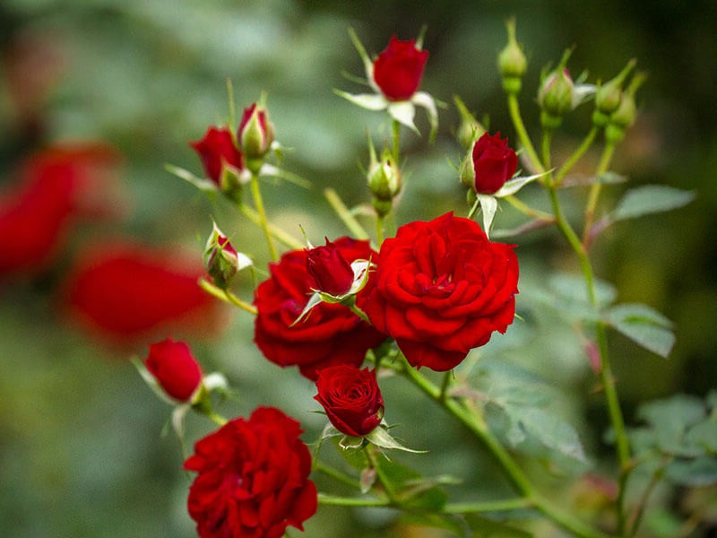
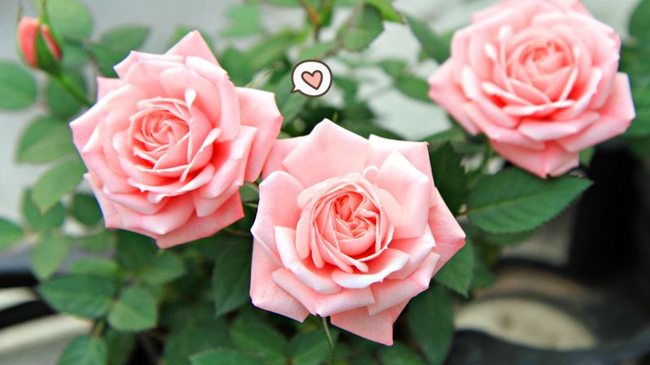
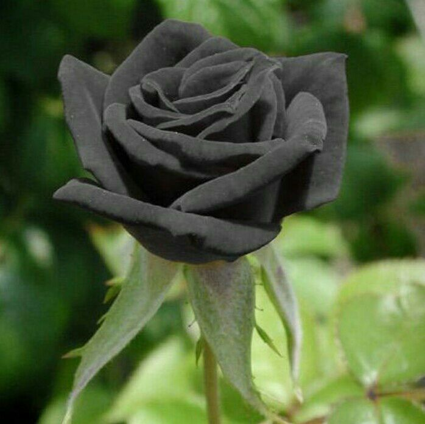
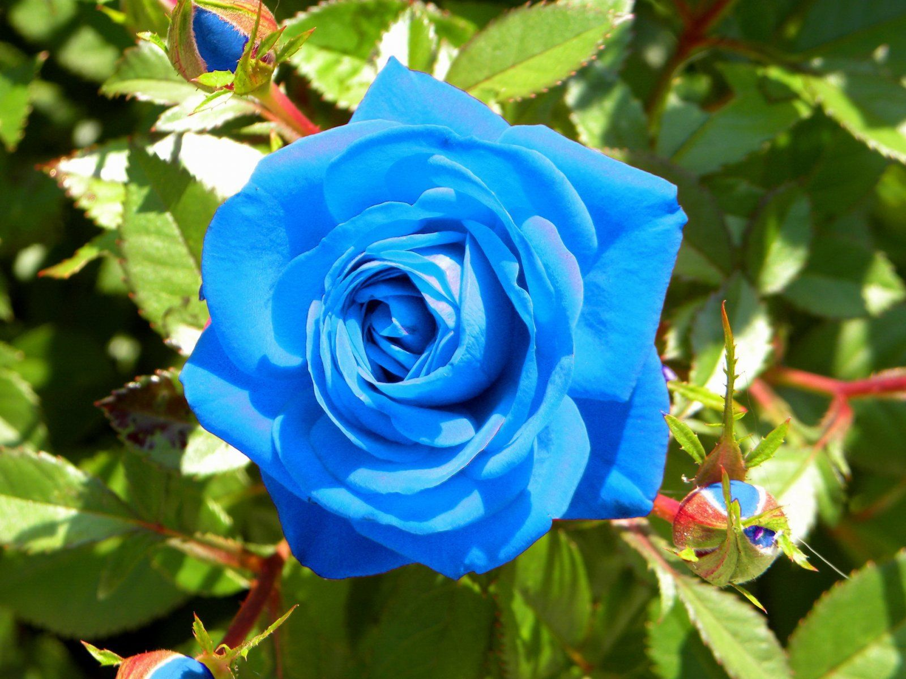
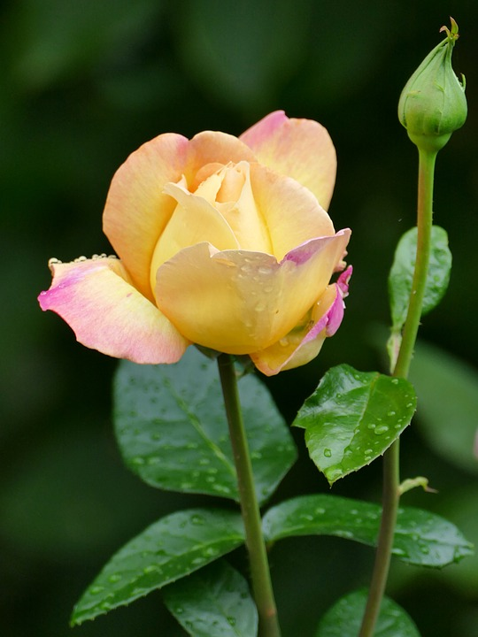
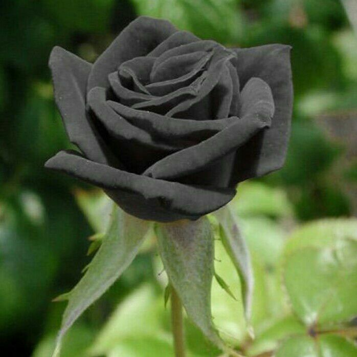
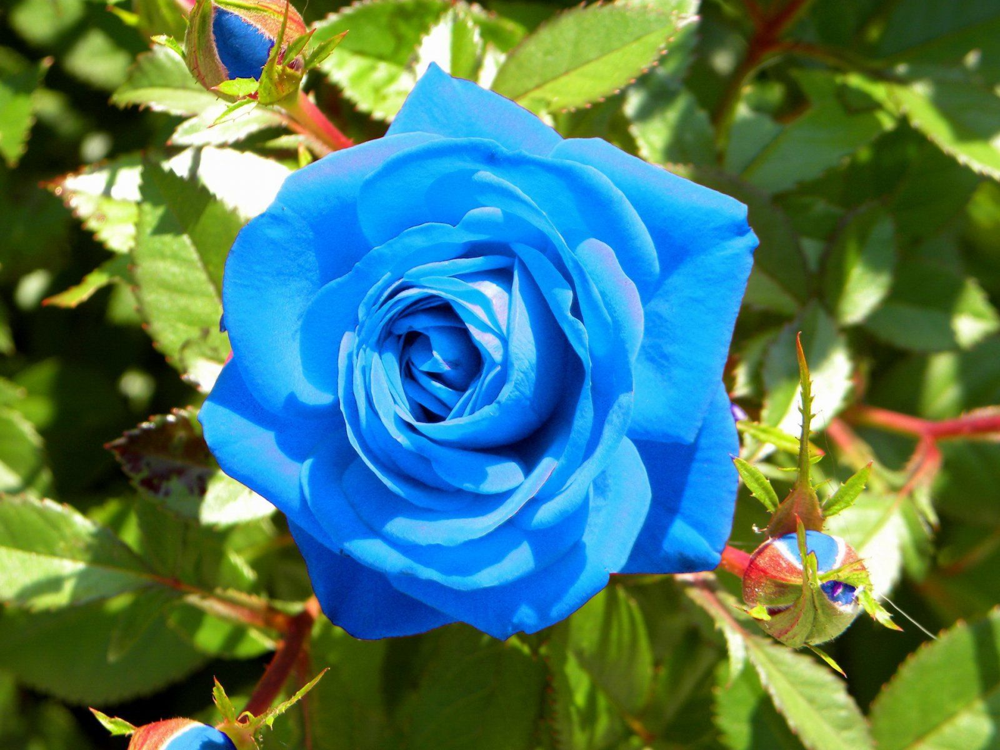
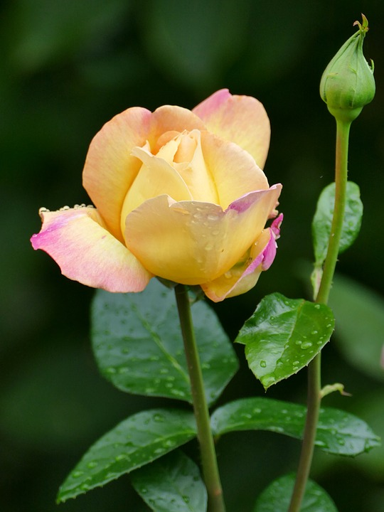

Bunga Mawar
Bunga mawar adalah jenis tanaman semak yang berasal dari Genus rosa sekaligus menjadi nama dari bunga yang dihasilkan oleh tumbuhan ini. Mawar umumnya merupakan tanaman semak yang berduri atau tanaman memanjat yang tingginya bisa mencapai 2 sampai 5 meter.
  




